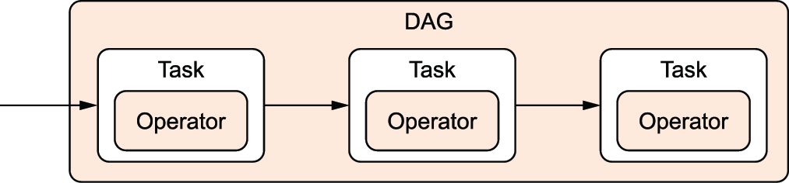

Week 11: Vector Databases
DSAN 6000: Big Data and Cloud Computing
Fall 2026
Monday, November 16, 2026
Pipelines for Triggered Execution
…HEY! WAKE UP! NEW DATA JUST CAME IN!
You before this week:
- Sprint to your
.ipynband/or Spark cluster - Load, clean, process new data, manually, step-by-step
- Email update to boss

You after this week:
- Asset-aware pipeline automatically triggered
- Airflow orchestrates loading, cleaning, processing
EmailOperatorsends update

Operators: What Kind of task?
- “Core”
Operators:BashOperatorandPythonOperator
- + Hundreds of “community provider”
Operators: HttpOperatorS3FileTransformOperatorSQLExecuteQueryOperatorEmailOperatorSlackAPIOperator
+ Jinja templating for managing how data “passes” from one step to the next:

Task vs. Operator: A Sanity-Preserving Distinction
From Operator docs:
When we talk about a
Task, we mean the generic “unit of execution” of aDAG; when we talk about anOperator, we mean a [specific] pre-madeTasktemplate, whose logic is all done for you and that just needs some arguments.
Task:

Operator:


Concepts \(\leadsto\) Code
start-airflow.sh
- Full Airflow “ecosystem” is running once you’ve started each piece via above (
bash) commands! - Let’s look at each in turn…

API Server
start-airflow.sh
Web UI for managing Airflow (much more on this later!)
Default Login Info
Default db migrate generates admin password in ~/simple_auth_manager_passwords.json.generated

Scheduler → Executor
start-airflow.sh
- Default:
LocalExecutor - For scaling:
EcsExecutor(AWS ECS),KubernetesExecutor - See also
SparkSubmitOperator

DAG Processor
start-airflow.sh

From (ruiter_data_2026?)
Graph View

Calendar View

Gantt View

Implementation Detail 1: Backfilling

Implementation Detail 2: Train Model Only After Backfill


Implementation Detail 3: Downstream Consumers

From (ruiter_data_2026?)